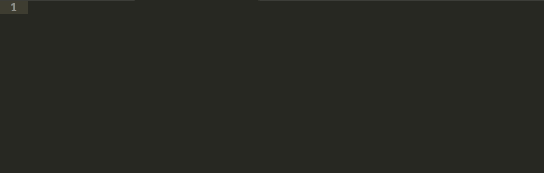
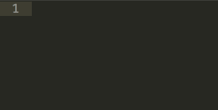

Sublime Text 3 使用方法¶
本教程推荐使用 Sublime Text 3 作为OpenSees命令编辑器。Sublime Text 3支持Windows, Mac和Linux平台，其免费版本除了保存一定次数后会跳窗提示未注册外，其余功能与注册版本没有区别。相似的编辑器替代品还有Windows平台下的 Notepad++ , UltraEdit ，Mac平台下的 TextMate 以及终端编辑器 Vim 等。
与上一张的 CypressEditor 使用方法 不同的是，cypress editor 更像是一个 IDE（开发环境） ，而 Sublime Text 3 是一个更加纯粹的文本编辑器。如果类比 C++ 和 Python , cypress editor 就像 Visual Studio 和 PyCharm 。但是 Sublime Text 3 可以完成上述任何语言的开发。
下面介绍 Sublime Text 3 的基本使用方法。
下载和安装¶
登陆 Sublime Text 3 的官方网站 ，进入 Download 页面，选择合适的版本，下载并安装即可。目前 Sublime Text 3 仍为测试版，但是其功能已经比较完善，所以建议不要使用旧版本。您下载免费版本拥有 Sublime Text 3 的所有功能。与付费版本唯一的不同是，每保存一定次数会弹出对话框建议购买。如果这对您造成困扰，建议购买付费版本。
常用快捷键¶
Sublime Text 提供了非常丰富的快捷键，十分有助于编写OpenSees或其它代码。下面介绍一些主要的快捷键。
cmd+D：选择重复内容。这在修改相近的重复内容时十分有用。cmd+U：如果cmd+D不小心多按了一次，可以取消上一次的选择。cmd+L：在光标所在的位置选择整行。cmd+shift+L：把选择好各行的一个区域按行分解为多个区域。cmd+shift+D：复制整行。cmd+/：注释和取消注释cmd+左右箭头：从光标起选择到行尾。cmd+control+上下箭头：把行与相邻行对调位置。alt+鼠标左键：列块选择模式。
以下是在编辑OpenSees代码过程中经常使用到的快捷键。还有很多好用的快捷键，用户可以参考以下文章。
- Sublime Text Unofficial Documentation (英文，官方推荐的“非官方”文档)
- Sublime Text 3 快捷键总结
Package Control¶
安装¶
Sublime Text 的扩展性能非常强，有一个非常方便的插件包管理工具 Package Control 。几乎所有用户都会使用 Package Control 来管理自己的插件。强烈建议安装 Package Control 。
安装 Package Control 非常简单，您只需要打开其 安装页面 ，将其中的代码复制，再回到 Sublime Text 中，从 View - Show Console 中（或按下 control + \` ） 打开控制台，粘帖，按回车执行，就安装好了 Package Control
使用方法¶
Package Control 要从 Sublime Text 的 Command Palette 中运行。点击 Tools - Command Palette 弹出命令面板。在命令面板中输入 Package 就可以看到全部与 Package Control 有关的命令了。其中主要有
- Install Package: 安装插件包。执行后看左下角的状态栏中显示正在搜索，过几秒钟后在命令面板中就会显示出一个列表，这个列表就是所有可用的插件。从列表中选择所需要的插件，单击就会自动安装。这些插件是托管在Github上的开源项目，所以需要联网才能安装。
- List Packages: 列出当前所有安装的插件。
- Disable Package: 禁用某个插件.
下面我们就可以利用 Package Control 来安装我们所需要的插件了。下文中我将介绍与OpenSees编程有关的主要插件。
Sublime-OpenSees¶
Sublime-OpenSees 是一个专门针对OpenSees用户所提供的插件包。这个插件可以帮助用户快速的输入OpenSees代码。该插件主要有如下几个功能
- 代码高亮：对于OpenSees所使用的主要保留字，提供代码高亮的功能。
- 自动补全：由于OpenSees每一条命令所需要的参数繁多，难以记忆，所以本插件提供自动补全功能。用户只需要输入主要的关键字，就会自动提供可选命令，并给予所需要输入的参数的相应参考。这一功能可以极大的提高代码的编写速度。
- 在
Sublime Text内部提交代码执行分析。这个功能是用户只需要简单的快捷键就可以执行OpenSees代码，而不需要切换到控制台中，可以提高工作效率。
安装¶
下面介绍一下 Sublime-OpenSees 的安装方法。按照上一小节中 Install Package 的使用方法，从弹出的插件列表中找到 OpenSees ，即可完成安装。
在使用中，首先新建一个空白文档，找到 Command Palette ，输入 SSOP ，或者其他简写的字符串，找到 Set Syntex: OpenSees Input 一项，即可设定该文档的语言为OpenSees。这时输入代码的时候，对于OpenSees关键字，系统就会做高亮处理。与上一章相同，我们在文档中输入
puts "Hello, OpenSees!"
可以看到，代码中的 puts 被高亮处理了。
执行¶
下面我们试着在 Sublime Text 中直接执行OpenSees代码。点击 Tools - Build 或者快捷键 cmd + B ，就弹出了 Build选项 。选择 OpenSees 会发现程序底部弹出了一个窗口，输出了如下内容
[RUN OpenSees Sequential for "untitled.tcl" Started]
OpenSees -- Open System For Earthquake Engineering Simulation
Pacific Earthquake Engineering Research Center
Version 2.5.0 (rev 6228) 32-Bit
(c) Copyright 1999-2016 The Regents of the University of California
All Rights Reserved
(Copyright and Disclaimer @ http://www.berkeley.edu/OpenSees/copyright.html)
Hello, OpenSees!
[RUN OpenSees Sequential for "untitled.tcl" Finished in 0.1s]
说明该代码已经被OpenSees成功执行。
Note
在执行之前，请注意先保存文件。
如果您的对话框中没有弹出运行成功的消息，是因为 Sublime-OpenSees 包中的设置与您系统的实际情况不符。请打开 Preferences - PackageSettings - OpenSees - Settings - User 。如果您已经将 OpenSees 所在的文件夹 加入环境变量 ，则只需要拷贝如下代码到打开的 Settings - User 文件夹并保存。
{
"opensees_dir": {
"windows": "",
"osx": ""
},
"opensees": "opensees"
}
如果您没有把OpenSees所在文件夹加入环境变量，而是放在 C:opensees 文件夹中，请把上面代码修改为
{
"opensees_dir": {
"windows": "",
"osx": ""
},
"opensees": "C:\\opensees\\opensees"
}
代码补全¶
有关代码补全，演示如下
其它推荐使用的包¶
Increment Selection¶
Increment Selection 是一个快速创建连续整数的插件，这在OpenSees编程中很常见。
上图中使用的快捷键：
cmd+shift+D：复制整行cmd+箭头：选择到行首/首行cmd+shift+L：分割选择到列shift+箭头：选择相邻字母cmd+control+I：Increment Selection

ConvertToUTF8¶
如果你想打开的文本文件中包含有中文，由于编码问题， Sublime Text 有可能会显示乱码。安装了 ConvertToUTF8 之后，可以在打开文本文件几秒钟之内将编码转换成正确的编码。